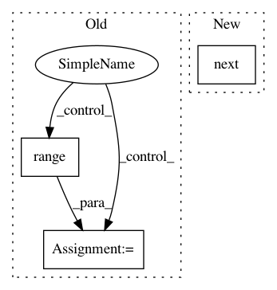

f2073333b710a340403843763ba60eb1e6699916,examples/data_process/tutorial_tfrecord.py,,,#,94
Before Change
coord = tf.train.Coordinator()
threads = tf.train.start_queue_runners(sess=sess, coord=coord)
for i in range(3): // number of mini-batch (step)
print("Step %d" % i)
val, l = sess.run([img_batch, label_batch])
print(val.shape, l)
tl.visualize.images2d(val, second=1, saveable=False, name="batch", dtype=None, fig_idx=2020121)
coord.request_stop()
coord.join(threads)
sess.close()
After Change
yield img_batch, label_batch
img_batch, label_batch = next(read_and_decode("train.tfrecords"))
print("img_batch : %s" % img_batch.shape)
print("label_batch : %s" % label_batch.shape)
tl.visualize.images2d(img_batch, second=1, saveable=False, name="batch", dtype=None, fig_idx=2020121)
In pattern: SUPERPATTERN
Frequency: 4
Non-data size: 3
Instances
Project Name: tensorlayer/tensorlayer
Commit Name: f2073333b710a340403843763ba60eb1e6699916
Time: 2019-04-11
Author: rundi_wu@pku.edu.cn
File Name: examples/data_process/tutorial_tfrecord.py
Class Name:
Method Name:
Project Name: flow-project/flow
Commit Name: 4045c03ccf5a4c0fa244e87843a2788893ba027d
Time: 2018-02-08
Author: akreidieh@gmail.com
File Name: flow/scenarios/two_loops_one_merging/two_loops_one_merging_scenario.py
Class Name: TwoLoopsOneMergingScenario
Method Name: gen_custom_start_pos
Project Name: flow-project/flow
Commit Name: 4045c03ccf5a4c0fa244e87843a2788893ba027d
Time: 2018-02-08
Author: akreidieh@gmail.com
File Name: flow/scenarios/two_loops_one_merging_new/scenario.py
Class Name: TwoLoopsOneMergingScenario
Method Name: gen_custom_start_pos
Project Name: tensorlayer/tensorlayer
Commit Name: f2073333b710a340403843763ba60eb1e6699916
Time: 2019-04-11
Author: rundi_wu@pku.edu.cn
File Name: examples/data_process/tutorial_tfrecord2.py
Class Name:
Method Name: